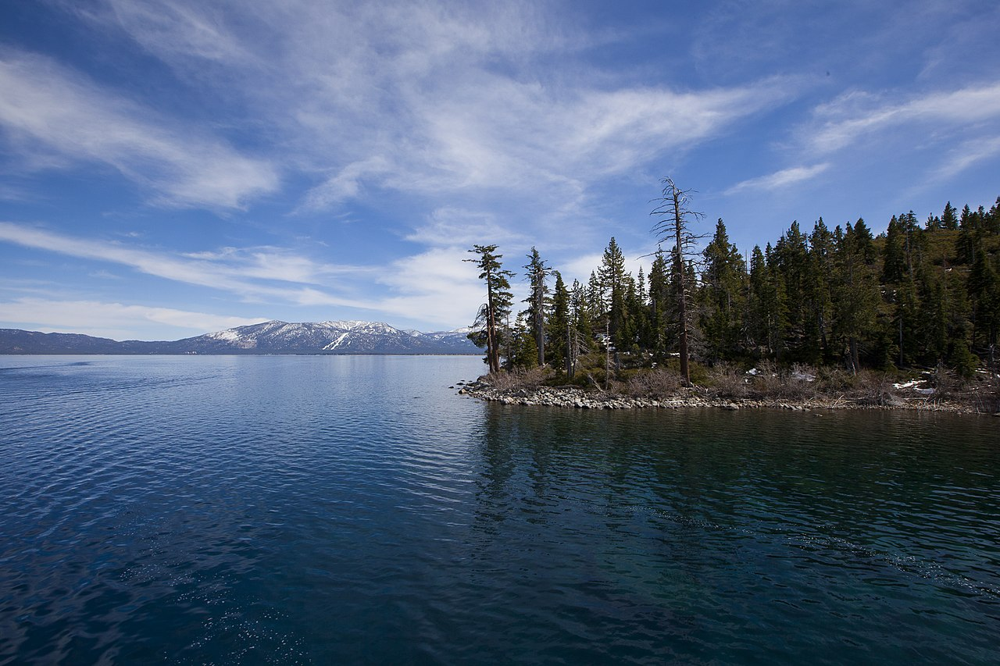

Lake Tahoe is a stunning alpine lake located in the Sierra Nevada Mountains. Straddling the border between California and Nevada, it offers breathtaking natural beauty and a wide range of outdoor activities year-round.
During the summer months, Lake Tahoe is a popular destination for water activities such as swimming, boating, and kayaking. The crystal-clear blue waters and surrounding mountains provide a picturesque backdrop for outdoor enthusiasts. Explore the scenic hiking trails that offer panoramic views of the lake or relax on the beautiful sandy beaches.
In the winter, Lake Tahoe transforms into a winter wonderland, attracting skiers and snowboarders from around the world. The region is home to numerous world-class ski resorts, offering a variety of slopes for all skill levels. Enjoy downhill skiing, snowboarding, cross-country skiing, and even snowshoeing in the breathtaking alpine landscapes.
Lake Tahoe also offers a vibrant dining and entertainment scene. From waterfront restaurants to lively casinos, you'll find a range of options to indulge in delicious cuisine and enjoy entertainment throughout the year. Additionally, the lake's surrounding towns and villages offer charming shops, art galleries, and cultural events.
Plan your visit to Lake Tahoe and experience the natural splendor and outdoor adventures that this destination has to offer. Whether you're seeking relaxation, outdoor activities, or vibrant entertainment, Lake Tahoe is a must-visit destination in California.